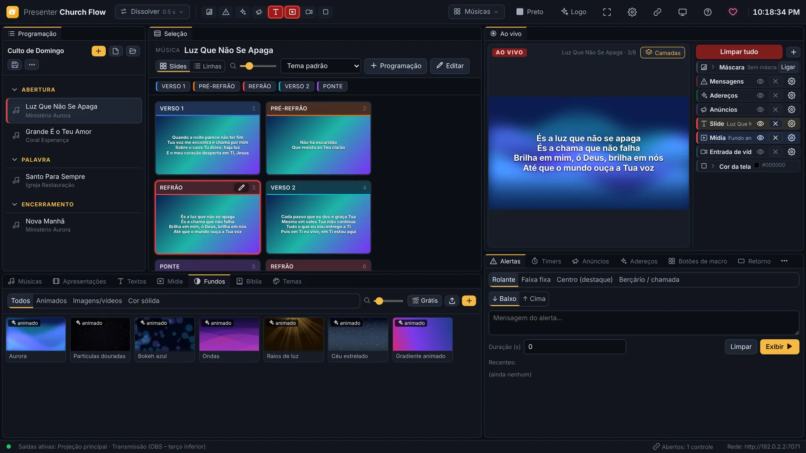
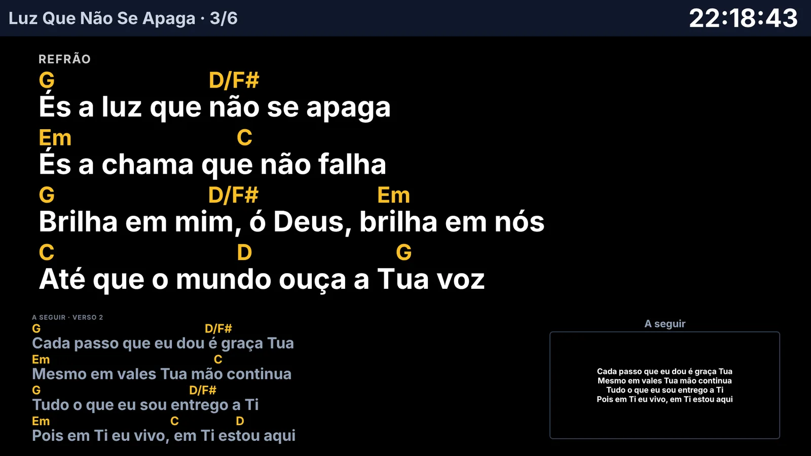
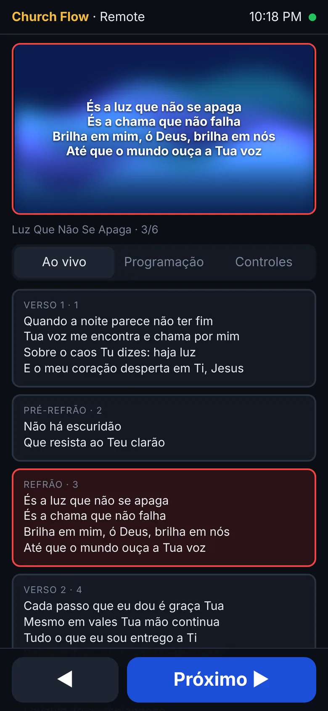
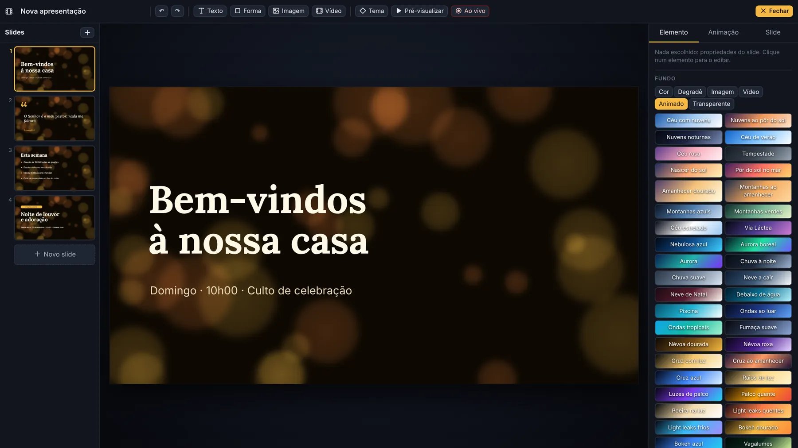
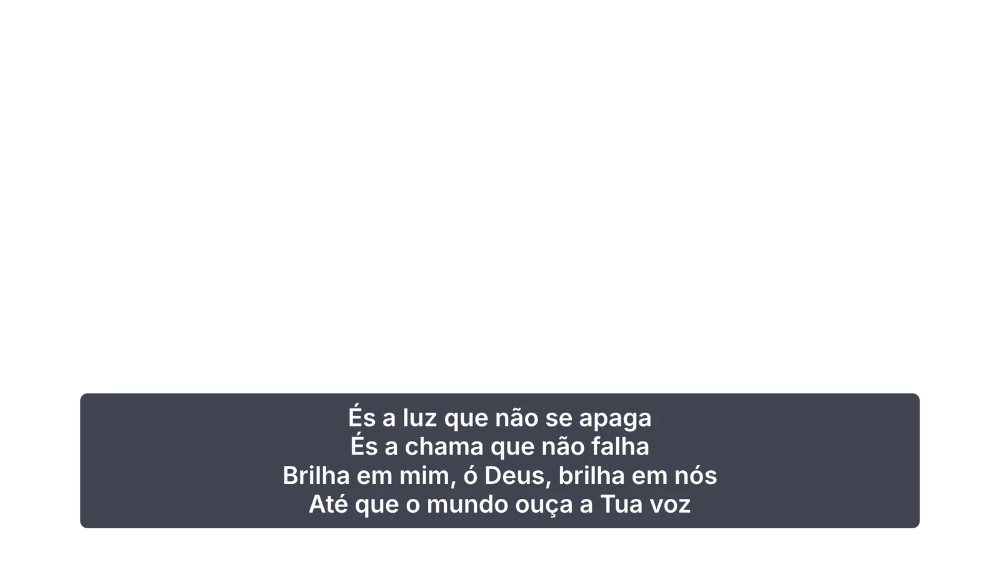
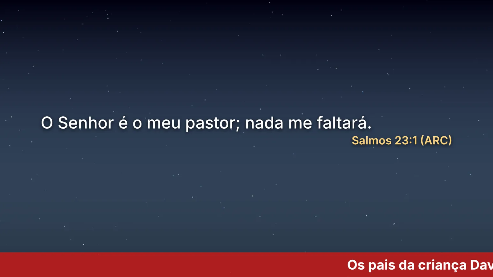

Escreva o nome. A música chega pronta.
Na maior parte das vezes a letra já vem dividida em Verso, Pré-Refrão, Refrão e Ponte, e com a cifra para os músicos. Escolha quantas linhas quer em cada slide e pronto.
Linhas por slide
Letras, Bíblia, vídeos, fundos animados, várias telas, palco com cifra, video mapping e transmissão. Num só programa, gratuito e completo para sempre.



Experimente aqui mesmo
É assim que se opera no culto. Escolha uma parte da música, mude a transição e o fundo animado. A tela de palco ao lado mostra aos músicos a letra com a cifra.
Use também as teclas do programa: 1 E R 2 P, ou → para avançar.
O mesmo, no celular. Aponte a câmera para o QR que o programa mostra e passe os slides do púlpito ou da mesa de som. Sem instalar nada.
A promessa
Nada de versão Pro, período de teste ou recurso trancado. O mesmo instalador para a igreja de 30 pessoas e para o congresso de 3 mil.
Hoje, amanhã e nas próximas versões.
Nem no programa, nem na projeção. Nada de marca d'água.
Instale e use. Os dados ficam no seu computador.
Quantas telas, temas, fundos e músicas quiser.
Destaques
Na maior parte das vezes a letra já vem dividida em Verso, Pré-Refrão, Refrão e Ponte, e com a cifra para os músicos. Escolha quantas linhas quer em cada slide e pronto.
Instale várias versões a partir de arquivos XML e troque com um clique. Busque por Jo 3:16-18 ou por palavras.
Junte projetores sem emendas, corte a imagem por várias telas ou painéis LED e projete em colunas, altar e paredes, cada um com a sua forma. A letra no centro, um vídeo nas colunas, a câmera numa lateral e o logo no altar, tudo ao mesmo tempo.
Escolha um dos 10 modelos modernos e troque os textos. Animações, vidro, degradês e fundos animados como num programa de design. Também abre PDF e PowerPoint.

Câmeras, placas HDMI e SDI, janelas e telas do computador e fontes NDI® podem ir para a tela inteira ou para uma única superfície do mapping.
As faixas do playback mandam o programa trocar de música e de slide. Um Stream Deck com o Companion vira uma mesa de projeção.
Envie qualquer saída pela rede, com transparência, e receba câmeras e programas NDI. Sem placas nem cabos extra.
Na mesma rede, cada saída abre num navegador: TV do saguão, tablet do músico, OBS, outro computador. Sem instalar nada.
Um culto inteiro
Escreva o nome da música e o programa traz a letra da internet, já separada em Verso, Refrão e Ponte, com a capa do álbum. Arraste músicas, versículos e vídeos para a ordem do culto e grave num arquivo que abre em qualquer computador.
Transições suaves, fundos animados que nunca pixelizam e oito camadas independentes: troque a letra sem mexer no fundo, ponha o logo sem apagar o versículo.
O pregador passa os próprios slides. A mesa de som pode mandar pela pedaleira MIDI ou pelo Companion. A equipe entra com PIN.
Cole um link no OBS ou no vMix e o terço inferior aparece com fundo transparente. Também envia e recebe por NDI®, sem chroma key.

CAM 1 · LIVERodapé rolante, faixa no topo ou chamada de berçário, por cima de tudo, sem interromper o que está no ar. Cronômetros para o pregador no palco.

Para quem está no palco
A tela de retorno mostra o que vem a seguir, o relógio, o cronômetro do pregador e a cifra.
E tudo o resto
Camadas, como nos grandes
Passe o rato por cima e veja cada camada subir. F1 limpa tudo de uma vez.
Para quem é
Igreja pequena
O assistente inicial liga o projetor, instala a Bíblia e traz as primeiras músicas. Quem nunca operou projeção começa no mesmo dia.
1 computador · 1 projetor · celular como remote
Igreja grande
Uma saída para o telão, outra para o retorno com cifra, outra para o OBS com terço inferior. Cada uma mostra as camadas que precisa.
Várias saídas · palco · OBS / vMix · MIDI
Eventos e conferências
Blend entre projetores com calibração por câmera, painel LED, video mapping e NDI para levar a imagem a toda a produção.
Multi-projetor · LED · mapping · NDI®
Download
v0.1.0
Se o Windows mostrar «O Windows protegeu o computador», clique em Mais informações e depois em Executar mesmo assim.
Na primeira vez, clique com o botão direito na app e escolha Abrir. Se o Mac disser que está danificada, no Terminal: xattr -cr "/Applications/Presenter Church Flow.app"
Para atualizar, instale por cima. As músicas, temas e configurações ficam em Documentos › Church Flow Dados e não se perdem.
Doação voluntária
O programa continua completo para quem doa e para quem não doa. As doações pagam horas de desenvolvimento, testes com projetores reais e novas versões.
(82) 98888-1294Na app MB WAY ou no homebanking, escolha «Enviar dinheiro» para este número.
Perguntas
Sim. Não há plano pago, período de teste, marca d'água nem anúncios. Todos os recursos vêm no mesmo instalador, e o instalador original pode ser partilhado com outras igrejas.
Não. O programa roda no seu computador. A internet só é usada para procurar letras, baixar vídeos grátis e verificar atualizações.
Sim, nos Macs com chip Apple (M1 a M4) e nos Macs Intel, a partir do macOS 10.15. Na primeira vez, clique com o botão direito na app e escolha Abrir.
Sim. Importa do EasyWorship 6 e 7, ProPresenter 4 a 7, Holyrics, OpenLP, FreeShow, OpenSong, ChordPro, CCLI SongSelect, PowerPoint e texto simples. Antes de importar, você vê a lista e as músicas repetidas.
Carregue em ? e escreva a dúvida com as suas palavras. A Ajuda mostra a melhor resposta e leva-o ao sítio certo. O assistente inicial também pode ser aberto outra vez a qualquer momento.
Ficam na pasta Documentos › Church Flow Dados. Há uma cópia de segurança automática por dia, o que se apaga fica 15 dias no Lixo e quase tudo se desfaz com Ctrl+Z. O remote pode ter PIN.